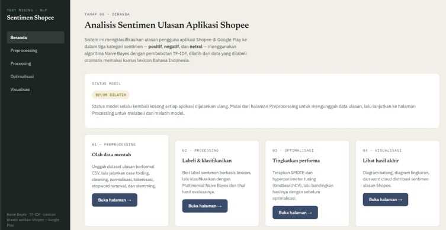
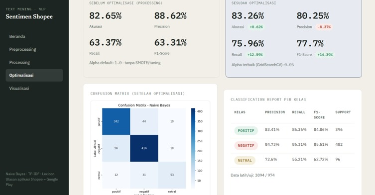
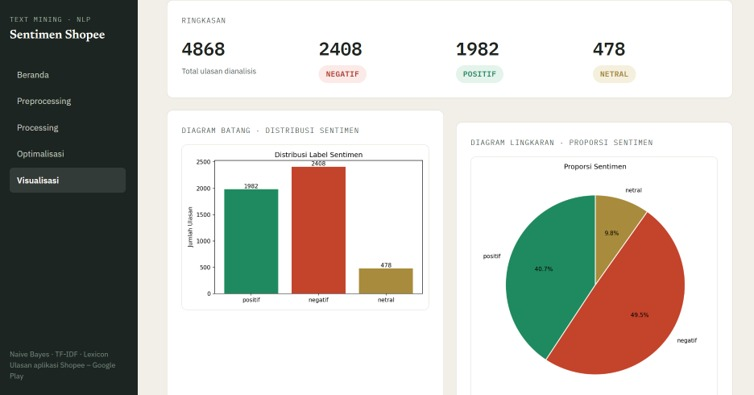
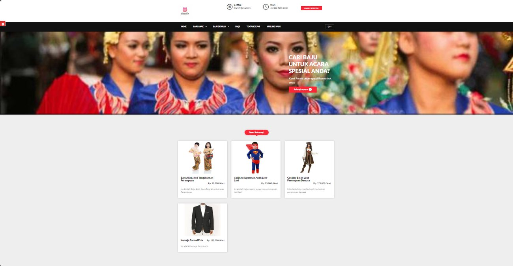
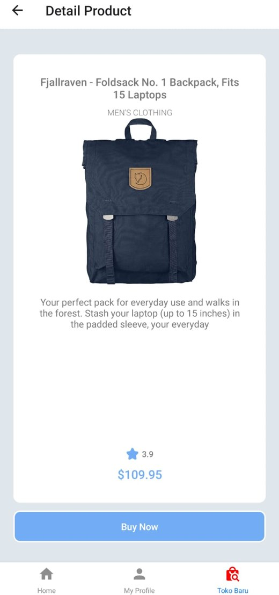
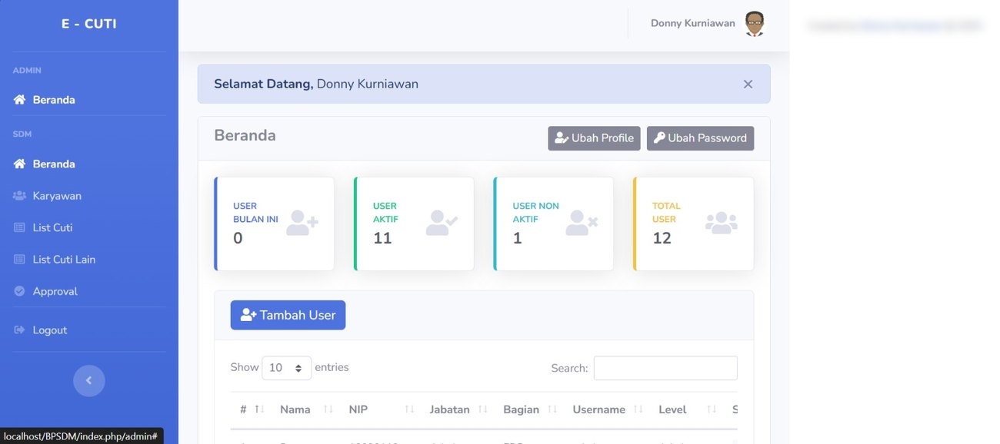

Lulusan S1 Teknik Informatika dengan IPK 3,91/4,00 yang tertarik mengubah data menjadi wawasan yang berguna.
Saya lulusan S1 Teknik Informatika Universitas Putra Indonesia “YPTK” Padang dengan IPK 3,91/4,00 dan predikat lulusan terbaik program studi.
Selama kuliah saya mendalami pengolahan data, pemrograman Python, dan penerapan machine learning. Ketertarikan itu saya wujudkan dalam penelitian tugas akhir tentang analisis sentimen ulasan aplikasi Shopee, mulai dari pengumpulan data, pembersihan teks, pembuatan model, hingga penyajian hasil dalam aplikasi web.
Saya berminat mengembangkan karier di bidang Data Analyst, Data Science, dan Artificial Intelligence. Saya juga terbiasa memanfaatkan referensi dan AI generatif secara terstruktur: menyusun instruksi yang jelas, memeriksa hasilnya, lalu menyempurnakannya secara bertahap untuk membantu pemecahan masalah.
Pendidikan ini membekali saya dengan dasar pemrograman, pengolahan data, dan machine learning, yang kemudian saya terapkan langsung dalam penelitian tugas akhir.



Ribuan ulasan di Google Play sulit dibaca satu per satu. Penelitian ini mengubahnya menjadi gambaran sentimen pengguna Shopee: positif, negatif, atau netral. Saya membangun aplikasi web dengan Flask yang memandu seluruh alur dalam lima halaman: Beranda, Preprocessing, Processing, Optimalisasi, dan Visualisasi.
| Metrik | Sebelum | Sesudah | Selisih |
|---|---|---|---|
| Akurasi | 82,65% | 83,26% | +0,62% |
| Presisi | 88,62% | 80,25% | −8,37% |
| Recall | 63,37% | 75,96% | +12,59% |
| F1-score | 63,31% | 77,70% | +14,39% |
Presisi turun karena SMOTE mengubah komposisi data latih (kelas minoritas diperbanyak dengan sampel sintetis), sementara GridSearchCV mencari nilai alpha terbaik. Perubahan seperti ini wajar, dan hasilnya recall serta F1-score naik cukup besar sehingga model lebih seimbang dalam mengenali tiap kelas. Per kelas, F1-score positif 84,86% dan negatif 85,51%, sedangkan netral 62,72% karena jumlah datanya paling sedikit. Sebagai pembanding, pengujian dengan RapidMiner menghasilkan akurasi 91,05%.

Glamify membantu orang yang butuh pakaian untuk satu acara tanpa harus membelinya. Pelanggan bisa menyewa baju anak-anak sampai dewasa, laki-laki maupun perempuan, mulai dari baju adat dan kostum cosplay hingga kemeja formal.

Belanja dari genggaman: aplikasi ini menampilkan produk lengkap dalam satu layar yang bersih, sehingga pengguna bisa memutuskan tanpa berpindah-pindah halaman.

E-Cuti adalah aplikasi web untuk mengelola cuti pegawai BPSDM Provinsi Sumatera Barat. Dalam proyek ini saya membantu pengembangannya agar pengajuan dan pengelolaan data cuti pegawai berjalan lebih tertata.
Tertarik berdiskusi atau bekerja sama? Silakan hubungi saya melalui: